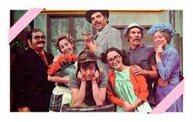

HOME › TV › CONHEÇA OS NOMES COMPLETOS DOS PERSONAGENS DE CHAVES
=======
.titulo{
font-size: 25px;
}
Pesquisa de Personagens do Seriado Chaves

Embora esteja atualmente fora do ar no SBT, durante anos, o seriado Chaves cativou espectadores de todas as idades com narrativas cheias de situações hilárias e personagens marcantes.
Com quase 50 anos de história, a produção mexicana envolveu o público de uma forma inesperada, atingindo grande sucesso em seu país de origem, além de outros países, como o Brasil.
Se você está curioso para saber o que aconteceu com o elenco de Chaves, não deixe de conferir mais informações logo abaixo!